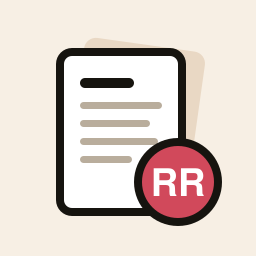

On the workbench
-

Pillars
TestFlightSleep, food, and workouts in one place. Pulls in what your Apple Watch tracks, lets you log meals and symptoms, and shows how they connect. Private and on-device.
-

Gridiron IQ
BetaA fantasy football sidekick for full-PPR ESPN leagues. Start/sit, waiver, matchup, and trade calls with reasons you can actually read.
-

Resume Redox
LiveA resume builder that keeps a version per role. Edit once, see a live ATS-friendly preview, and export a PDF that matches what's on screen.